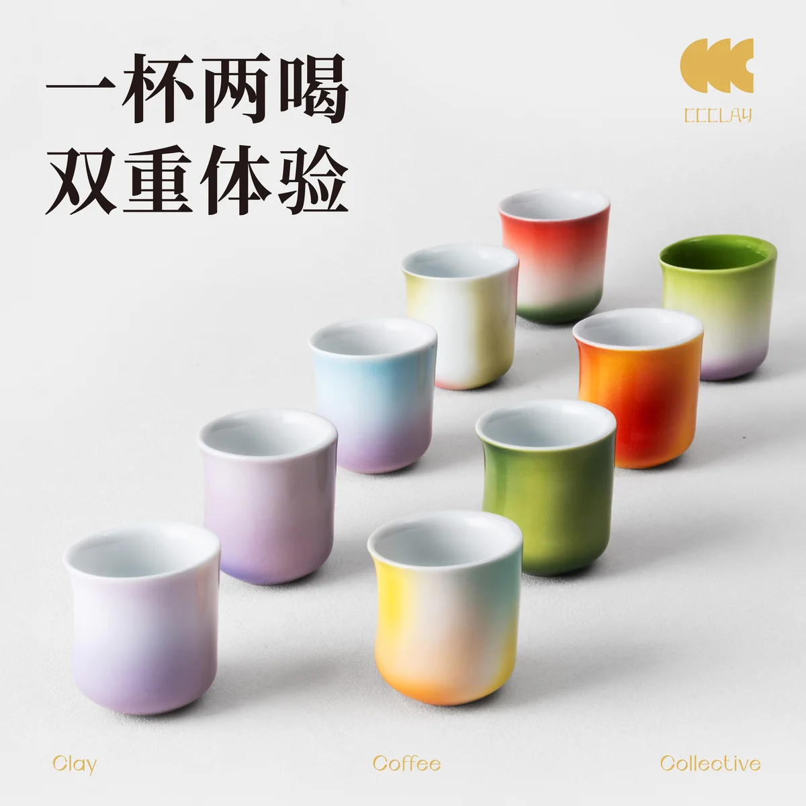
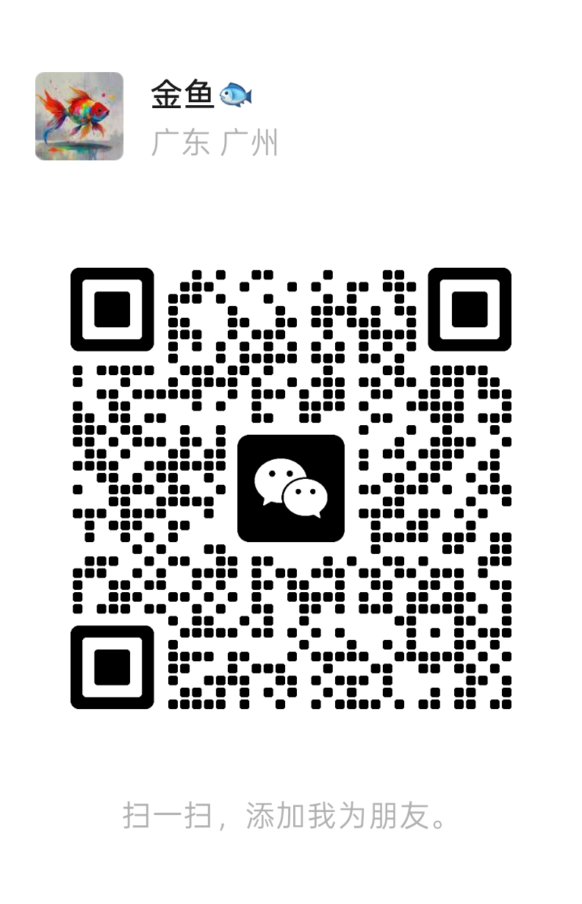

问题到底卡在哪里
拆开产品、卖点、素材、页面和执行链，找出真正影响项目的卡点，排清修改顺序。
你会拿到：问题判断和下一步优先级。
消费品牌 / 商品页 / 新品落地
我服务已经有实体产品、但团队不完整的消费品牌。产品价值说不清，页面、摄影和设计接不上，项目反复返工时，我帮你找出真正的卡点。
你可以带着一个卡住的新品、一页说不清的商品页，或一个没人负责收口的项目来。

适合找我的时刻
已完成客户项目
CCCLAY 的无限倾角杯有明确的产品差异，线上却缺一条清楚的购买路径。我负责卖点梳理、页面结构、文案、摄影与设计 brief、集中反馈和终稿把关。
样板完成后，对方继续邀请我参与三个重点新品的项目拆解与推进。
你最终可以买到什么
如果你还说不清需要哪种服务，没有关系。具体范围按当前问题确认，不先套一份大而全的方案。
拆开产品、卖点、素材、页面和执行链，找出真正影响项目的卡点，排清修改顺序。
你会拿到：问题判断和下一步优先级。
梳理购买理由、页面顺序、拍摄需求、设计信息和待确认事实，让摄影师和设计师能够接手。
你会拿到：页面结构、文案与素材 brief。
把目标拆到负责人、节点、证据和验收，集中处理跨团队卡点，避免事情散在聊天记录里。
你会拿到：推进清单和节点验收方式。
第一次怎么开始
一个商品链接或产品资料、项目目前进行到哪里、你最想解决的一个问题。
我先判断问题更像出在产品、卖点、素材、页面，还是执行链，以及我是不是合适的人。
需要具体判断和方案时，再确认最小范围、双方责任、交付物、费用和验收方式。
第一次沟通只确认问题和合作匹配度，不在聊天里展开一套完整免费方案。
为什么可以找我
先确认材料、工艺、成本和交付限制，再判断页面应该说什么，不拿文案掩盖产品问题。
摄影拍什么、设计放什么、哪些事实待确认、怎样算完成，尽量在开始执行前说清楚。
方案要让现有的人做得下去。工具、表格和 AI 都可以用，但只保留真正能减少返工的部分。
次级案例 · 独立方案
一家走东方香茶路线、接近 3000 家门店的加盟品牌，要同时处理长期产品、临时上新和门店反馈。下面这四种情况，往往会一起出现。
每个月都在上新，招牌产品却没有变得更清楚。
临时项目一来，长期产品和技术储备就往后排。
新品卖得不好，说不清是产品问题，还是缺货、培训和门店执行。
各部门都有计划，却没人负责删项目、改顺序和定最终节点。
其他项目
门店有人来，也有内容互动，但租期和回本压力都在。这里不能先喊增长，得先看清菜单、陈列、夜间消费和记录方式有没有用。
好看的想法很多，但食品项目最后要过工艺、模具、包装、成本和客户理解。创意只是第一步，能做出来才算数。
我帮一家电商公司配置 Codex，也带团队用真实任务练。重点不是演示多炫，而是他们离开培训以后还能接着做。
关于我
我做过巧克力和食品产品，也自己做过消费品牌。这让我习惯同时看产品事实、消费者理解和执行限制。
我也长期把 AI 放进项目管理、客户材料、产品判断、供应链分析、设计 brief 和团队培训里。它是工作方法，不是单独卖点。
微信联系
加微信后，发我商品链接或产品资料，再说一句目前最卡的地方。我先判断这是不是我能解决的问题。
添加时可以备注：产品 / 页面 / 新品项目。需要具体方案时，再进入付费诊断或项目合作。
